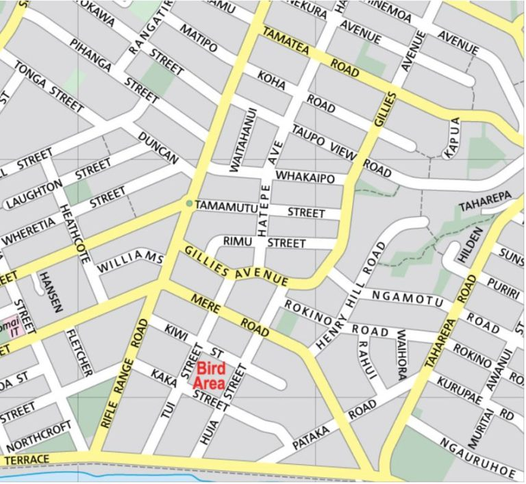

Experts in this field
Experts in gastronomy highlight that the finest restaurants prioritize culinary excellence, sourcing fresh, local ingredients and creatively showcasing regional flavors. They emphasize skilled technique, crafting visually stunning and delicious dishes. These establishments excel in personalized, knowledgeable service, extending beyond the dining room to areas like reservation management. Ambiance is also key, with meticulous attention to lighting, music, and décor creating a memorable dining atmosphere. The best restaurants blend exceptional food, service, and ambiance for an unforgettable experience.
Only the best food
When defining the best restaurant, the focus is on exceptional food. The top establishments prioritize fresh, high-quality ingredients, transformed into culinary masterpieces through skillful techniques. Each dish is a work of art, thoughtfully crafted to delight the senses and leave a lasting impression. The menu showcases a diverse range of flavors and textures, catering to various tastes. Behind the scenes, passionate chefs continually innovate, pushing the boundaries of flavor and creativity. In these restaurants, dining becomes a journey of taste and discovery, elevating the experience beyond mere sustenance.
Visit Us
1950 Lewis Avenue
Brooklyn, NY 11201
